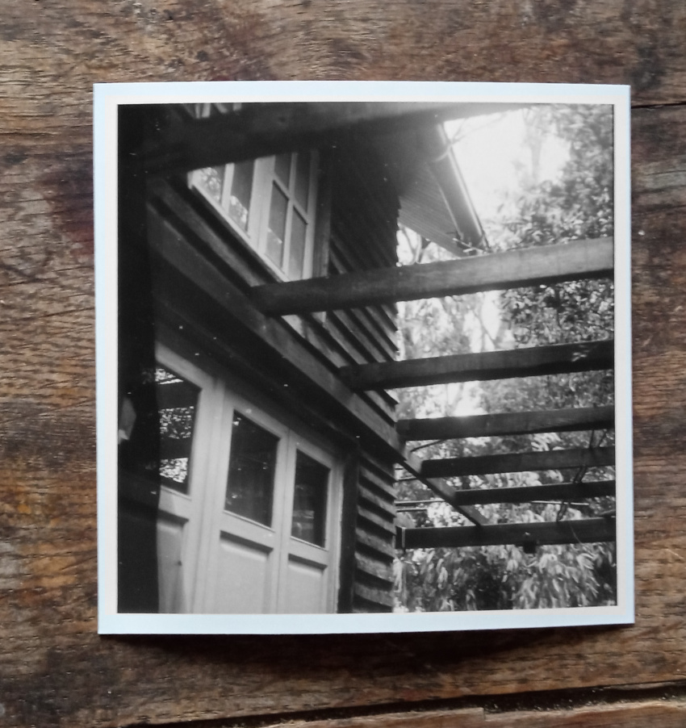
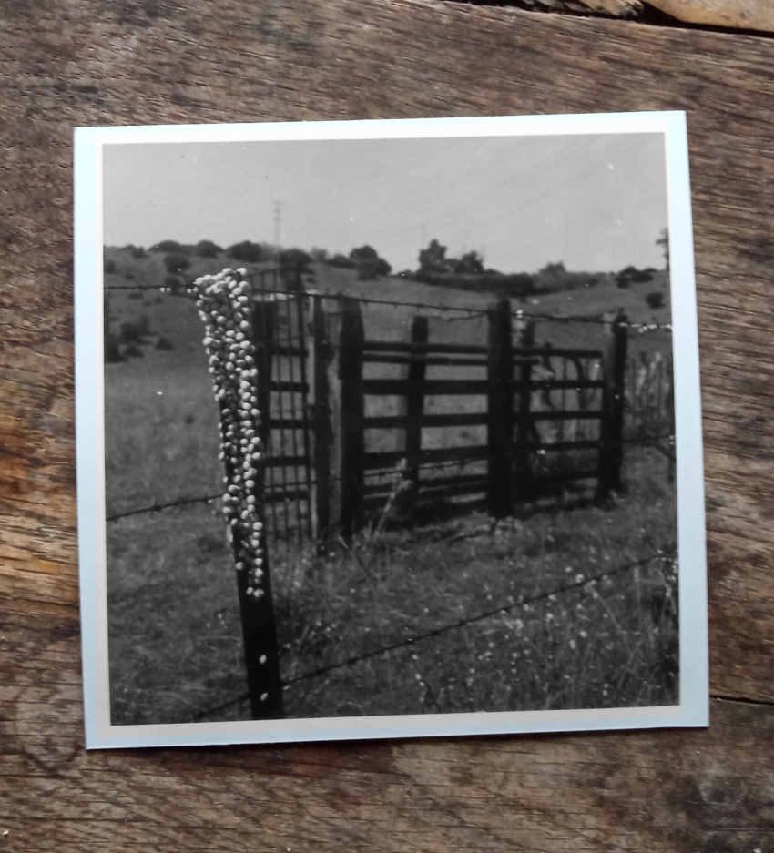
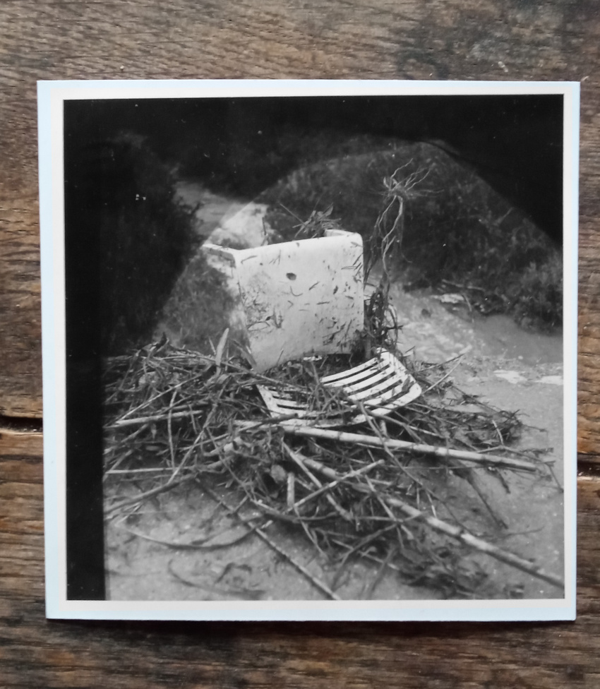
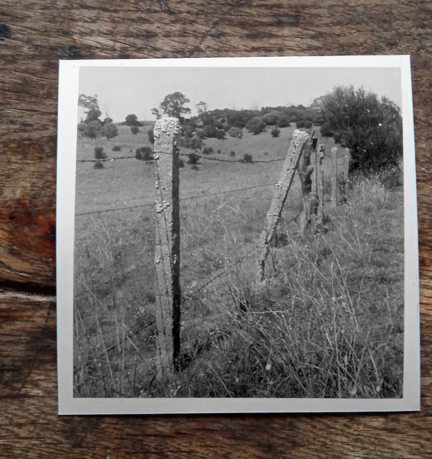

What you didn't ask in time, you may never get to ask. You will not know everything there is to know. Even though we spent so many minutes in silence, not feeling the need to speak, when the time elapsed, some things will have been left unresolved. With all the repetition we felt we are allowed to indulge in, something of the core was left unknown, and the pain from the feeling of missed opportunities, is the new story now.

His name on the screen, the phone on silent mode. It occurs quite often when the phone is on silent, he calls and I happen to look at the screen and see his name. Curiously his profile picture is a computer generated image of two beings embracing, a male blue icy figure and fiery woman figure. A passion contrasting the name 'Dad' above the image. I click and say "hello dad", his voice more wakeful than I expected. "Hi, listen, I don't know where I am exactly, it is dark here, must be underground... there's water running. I know it is a hospital, but it must be some cellar". I enquired "is there no one to ask?" and he said that no.
Water running down the wall. It is gushing, might reach this bed. He can make out the shape of some pillars in the blurry half-light, feels underground, must be a cellar. The sound of the water mingles with the beeping sound of the hospital machinary, a reading in bleeps. No one showed up for god knows how long, only this person to his right, that shows at will in the extremety of his field of vision. He must concentrate intently for this ghost to appear, but then it dissloves again. He knows that this person can't bring anything useful, but his presence is comforting, and he spreads a warm feeling of affirmation... Exhaustion, trying to voice anything costs a life, and the mumble that comes out makes no sense. He wonders whether he will need to learn to speak all over again, thoughts though, come and go, and nothing persists in his brain. The sound of the water lapping washes over this last thought, followed by a startling worry that the water might get him wet soon, or does he feel wet already? but that thought desolves and leaves him with deep throathy sound that turns into a yawn.

There are moments I am gasping for air. A step back, or a few steps too many. In those moments I am looking for the way out, but like in a cave I cannot be bailed out, I have to retrace my steps, and I need to find new holds for the escape. My dad. In a lucid moment he requires something. There is the worry that comes with the lucid moments, and there is the worry that is attached to the moments when he is less than lucid. When his face sheds the effort of living, and shows only the patina of have-lived. In a lucid moment, on the other hand, the man comes late to the game, the other players are somewhat exhausted, but he wants to play. He asks for water, no actually go get him coffee, he knows he didn't drink the last one you got him, but this moment is a new moment, and do you mind straightening him up? Do you know where the phone is? He is certain they are late with dinner, and do you know how he couldn't sleep in the night? He makes up for it in the day, I think to myself. I went up and down this lift five times this morning. This time one of the medics is going down with me, phone in hand, out of his uniform, eager to forget about this ward till his next shift.
It is a long corridor out of the building and to the next one. In the time I am here I found the three reasonable options for coffee, but then settled on the smaller setup, usually manned by a young boy and a young girl that seem to pass an ok time serving an infinite flow of coffee drinkers and pastry eaters. I also finally settled on the small coffee, after meddling with medium and large. The breaking point was in the weekend. I ventured further for coffee, as the known places take their break in the weekend. I joined the line of people, and mistakingly ordered a large coffee. I thought this is too far to walk again, I won't come back, and I won't have another coffee today. Unfortunately, this coffee was particularly bad, and there was a lot of it. I settled on small since.

The breathing changed. I lifted my eyes from the book I was reading, and saw that his were open. He looked straight ahead, blinked, slight movements of the eyes. Wakefulness. - Hi dad, you are awake. - Hey... so you came. - Yes dad, I've been sitting here for a week now. I was helping you feed, and moving you around in bed, do you not remember? - hmmm.. no. He appeared to scan his brain with blinks and breaths, and then said: - I understand it was an amputation, right? - Yes. - And what do the doctors say? - They say it went well, and it is healing. - Good, I'm really tired I will get back to sleep now. I wanted to say how concerend we were with his long sleep, and delusion, but the moment was lost and his breath turned into light snores. There was no guarantee that the next time he speaks he will make sense, but that little conversation filled me with hope. I didn't realise the level of stress I was in until I was allowed to release. I rose and left for a walk.
